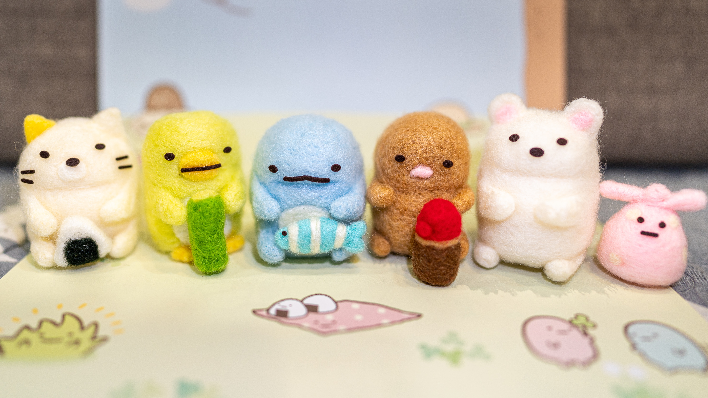
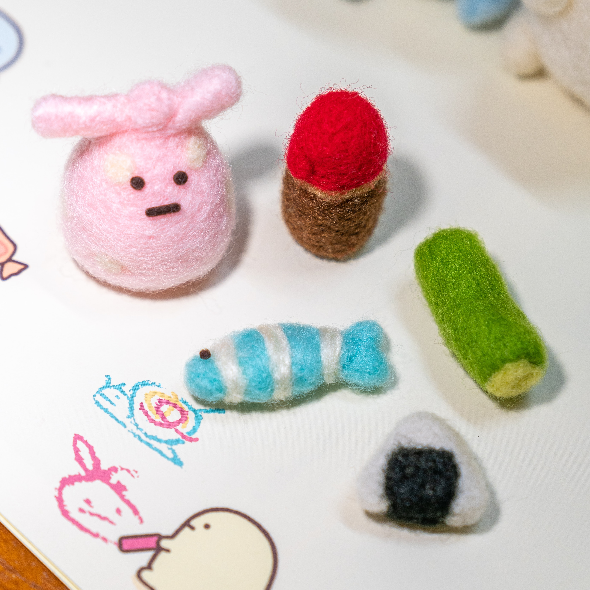
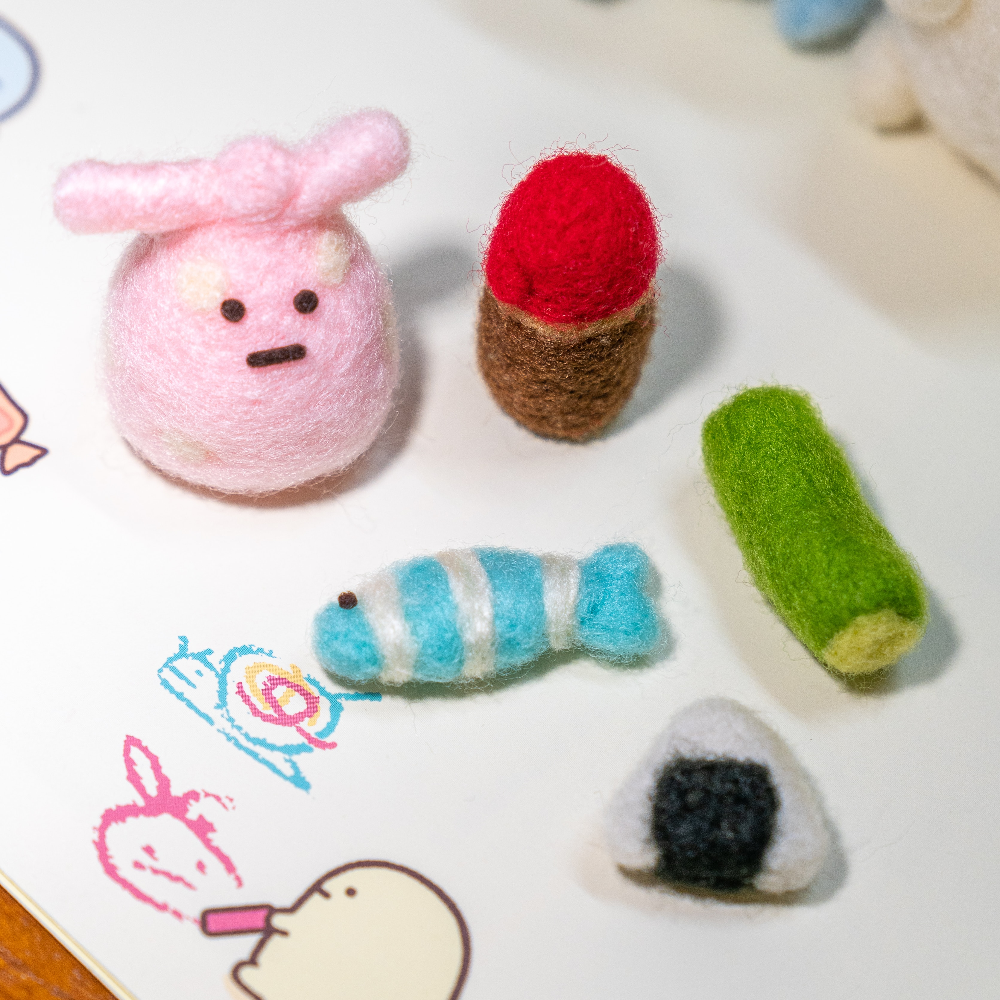
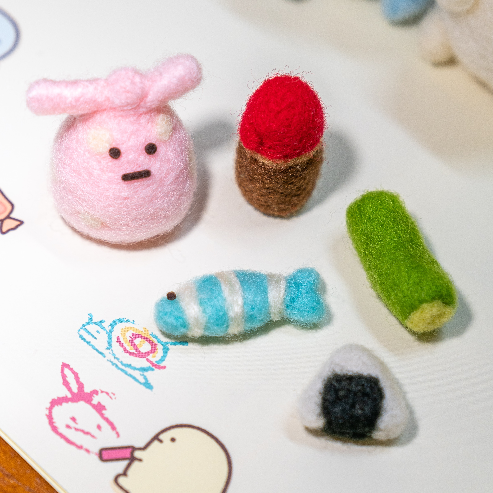

Rock Paper Scissors
Choose Your weapon
Result
 

- For the felting workshop add make dividers look like yarn / felt
- Use a grid like a art cutting bord grid for background of footer

- For the felting workshop add make dividers look like yarn / felt
- Use a grid like a art cutting bord grid for background of footer